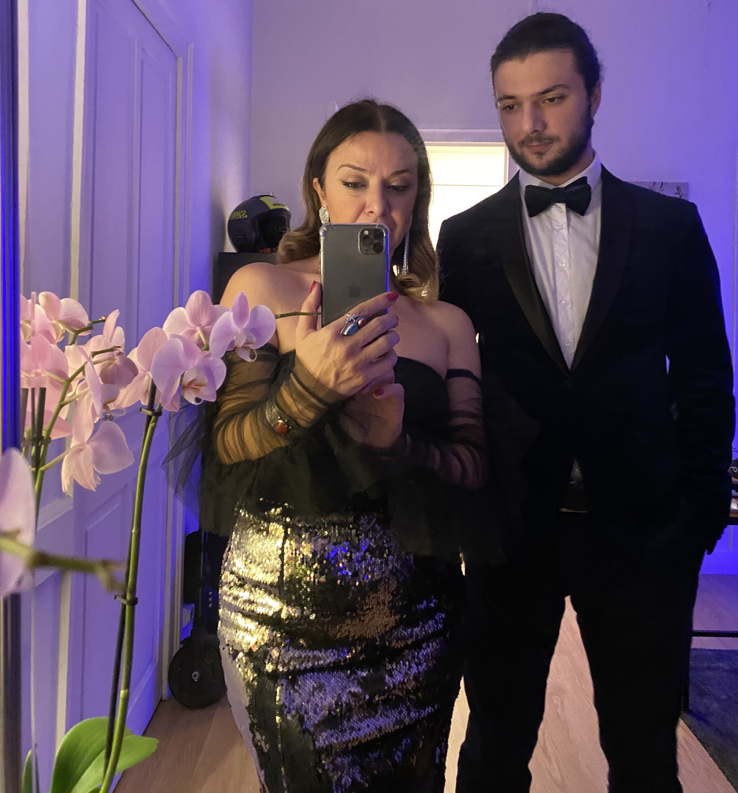
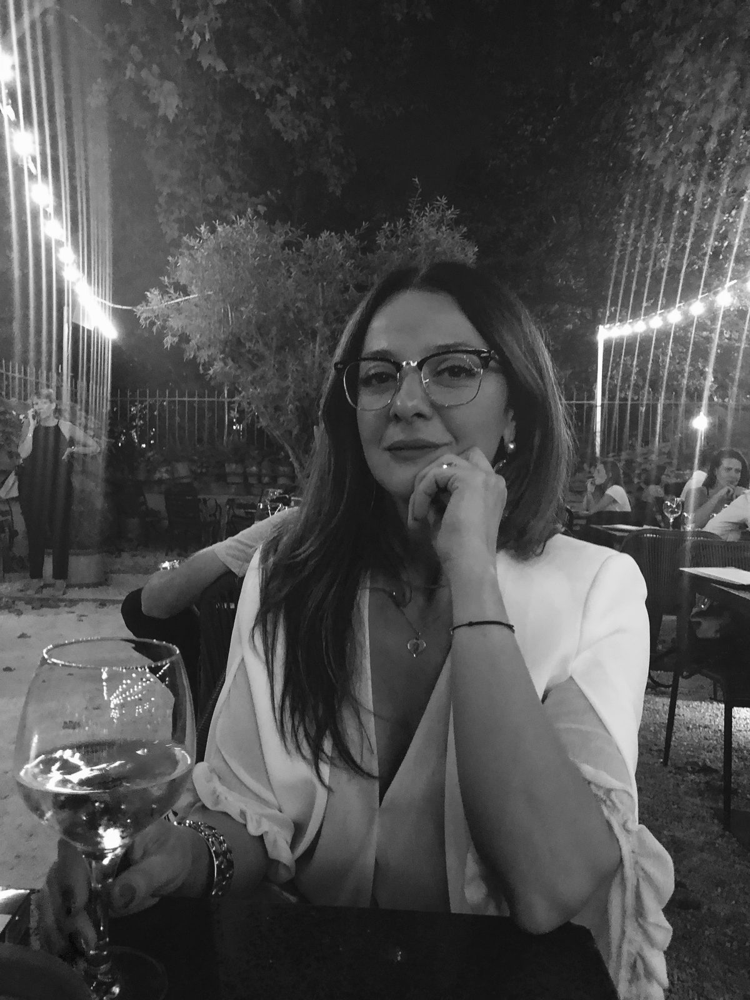
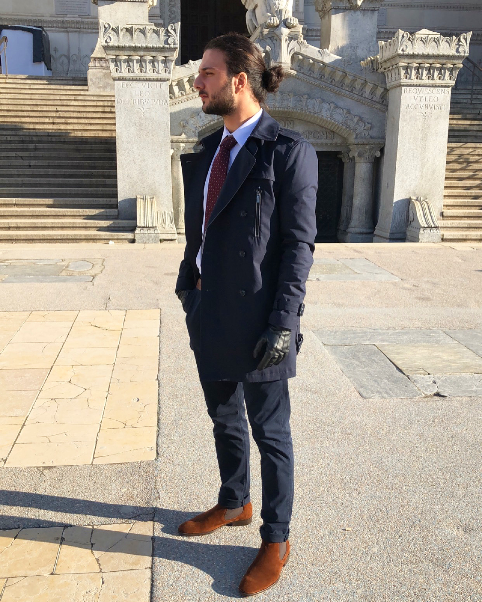
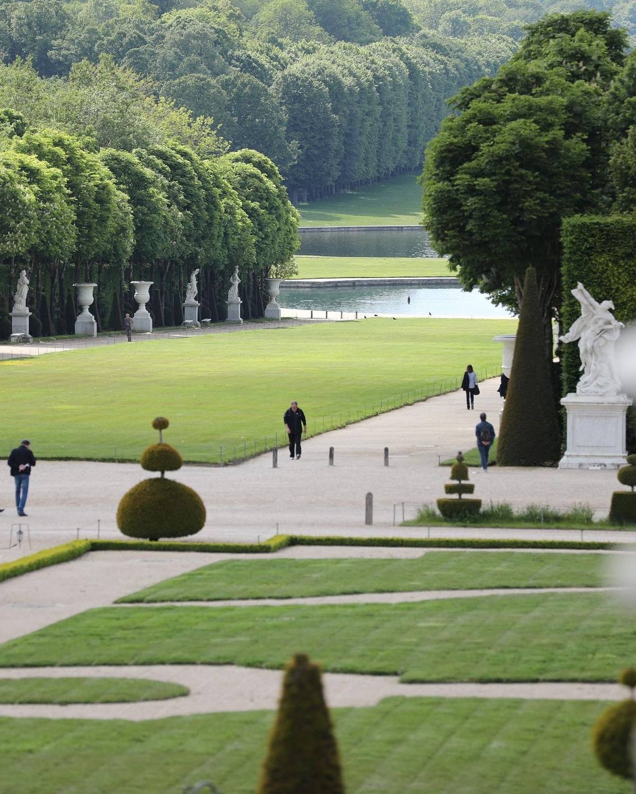

ჟურნალი
ისტორიები, მოგზაურობები, იდეები და ცხოვრებისეული გაკვეთილები — ჩვენი სიტყვით.
ორი განსხვავებული ხედვა. ერთი საერთო მიმართულება.

ჩვენ ვართ თამარი და ლეო — დედა და შვილი. ორი განსხვავებული თაობა, ორი განსხვავებული გამოცდილება, ორი განსხვავებული ხედვა, მაგრამ ერთი საერთო რწმენა, რომ ყოველი
ადამიანი საკუთარ თავში ატარებს უნიკალურ შესაძლებლობას, შექმნას რაღაც ღირებული, და სასარგებლო როგორც საკუთარი თავისთვის ასევე სხვებისთვის და გერომოსთვის.
თამარი &

დავიბადე თბილისში, ყოფილ საბჭოთა კავშირში - 1978 წლის 7 დეკემბერს, მქონდა ბედნიერი, ლაღი და სიყვარულით სავსე ბავშვობა. პატარაობიდანვე მაინტერესებდა ყველაფერი, რაც შემოქმედებას და აღმოჩენას უკავშირდებოდა.
მიყვარდა წიგნები, ისტორია, ძველი ცივილიზაციები, ხელოვნება და ასტრონომია. ვოცნებობდი ფოტოგრაფიაზე. ვცდილობდი საკუთარი ხელით შემექმნა ტანსაცმელი. მუდამ მაინტერესებდა, როგორ მუშაობს სამყარო და რა ამოძრავებს ამ ყველაფერს.
ცხოვრებამ სხვა მიმართულებით წამიყვანა. 1991 წელს საქართველოში მძიმე პერიოდი დაიწყო. 1994 წელს ჩვენმა ოჯახმა საქართველო დავტოვეთ — თავდაპირველად ბელგიაში ვიცხოვრეთ, შემდეგ, 1998 წელს, საფრანგეთში ჩამოვედით.
ახალი ქვეყანა, ახალი ენა, ახალი კულტურა, ახალი ცხოვრება. ყველაფერი თავიდან უნდა დამეწყო.
სწორედ ამ გზამ მიმიყვანა თარჯიმნის პროფესიამდე. 15 წელზე მეტი გავატარე სასამართლო, ადმინისტრაციულ და თავშესაფრის სისტემაში ოფიციალურ თარჯიმნად. ამ წლების განმავლობაში ათასობით ადამიანის ისტორია მოვისმინე.
საქმიანობის პარალელურად არასოდეს შემიწყვეტია სწავლა და განვითარება. ვიკვლევდი ფსიქოლოგიას, ქოუჩინგს, დაფარულ ცოდნებს რათა მცოდნოდა სიმართლე, ადამიანის შინაგან სამყაროს. შინაგანად ყოველთვის ვიცოდი, რომ ჩემი პროფესია თარჯიმნობა საბოლოო დანიშნულება არ იყო. ის იყო ხიდი — რომელმაც მომცა ცოდნა, გამოცდილება, ადამიანების და მათი გასაჭირის უფრო ღრმად დანახვის უნარი.
ამ გზაზე ვიხილე წარმატებაც და იმედგაცრუებაც. გამბედაობაც და შიშიც. საყვარელი მამის დაკარგვის ტკივილი და თავიდან დაწყების ძალაც, ასევე გავიცანი დიდი სიყვარულიც, რომელმაც ჩემი ცხოვრება სამუდამოდ შეცვალა.
ადამიანის ყველაზე დიდი სიმდიდრე მისი გავლილი ცხოვრება და პირადი გამოცდილებაა.
& ლეო

ლეო დაიბადა საფრანგეთში, ლიონთან ახლოს 2000 წლის 8 დეკემბერს. ბავშვობიდან გამოირჩეოდა ცნობისმოყვარეობით, დამოუკიდებელი აზროვნებითა და შექმნის სურვილით. მას ყოველთვის აინტერესებდა, როგორ მუშაობს ნივთები, სისტემები და მექანიზმები შიგნიდან.
ბავშობიდან ჰქონდა სურვილი შეეცვალა ყველაფერი რაც არ მოსწონდა. 6 წლიდან თამაშობდა ჩოგბურთს, იზრდებოდა ქართულად დედის, ბებია - ბაბუა და ბიძაშვილების გარემოცვაში.
ჯერ კიდევ 12 წლის ასაკში ცდილობდა საკუთარი ბრენდის შექმნას. შექმნილი ჰქონდა ვიდეოთამაშების პლატფორმის პროტოტიპი. მუშაობდა ელექტრო ტრანსპორტის გაქირავების კონცეფციაზე, მაშინ როდესაც ეს ყველაფერი ჯერ არ არსებობდა.
ტექნოლოგიები მისთვის მხოლოდ ინსტრუმენტები არასოდეს ყოფილა — ის მათ შესაძლებლობებად აღიქვამს. სჯერა, რომ სწორად გამოყენებულ ტექნოლოგიას შეუძლია ადამიანების ყოველდღიური ცხოვრების გამარტივება და ახალი შესაძლებლობების შექმნა. სწორედ ამ რწმენიდან იბადება მისი პროექტები.
მიუხედავად ასაკის, გამოცდილებისა და ინტერესების განსხვავებისა, ბევრ რამეში ძალიან ვგავართ ერთმანეთს.
გვიყვარს იდეებზე მუშაობა, განვითარება და ახალი გზების ძიება.
ჩვენ არ ვქმნით პროექტებს მხოლოდ ბიზნესისთვის. არ გვსურს წარმატება ყველაფრის ფასად.
ზოგი ჩვენი პროექტი ემიგრაციის თემას ეხება. ზოგი ტექნოლოგიას. ზოგი პიროვნულ განვითარებას. მაგრამ ყველა მათგანს ერთი საერთო საფუძველი აქვს — სურვილი, ავაშენოთ ნდობაზე, პასუხისმგებლობასა და რეალურ ღირებულებაზე დაფუძნებული ეკოსისტემა.
რას ემსახურება ჩვენი პლატფორმა
ეს სივრცე შეიქმნა იმისთვის, რომ ადამიანებს გავუზიაროთ ჩვენი გამოცდილება, ცოდნა, პროექტები, აღმოჩენები და ცხოვრებისეული გაკვეთილები.
აქ შეხვდებით ისტორიებს, სტატიებს, ვიდეოებს, იდეებს და ჩვენს პროექტებს. და ყველაფერს, რასაც გზად ვქმნით.
ეს არის ადგილი, სადაც ერთმანეთს ხვდება გამოცდილება და ინოვაცია. წარსული და მომავალი, ადამიანური ისტორია და ტექნოლოგია, სადაც ადამიანურ ფასეულობას ცენტრალური ადგული უკავია.
ჩვენთვის ნდობა ყველაზე დიდი პასუხისმგებლობაა. ვაცნობიერებთ, რომ ყოველი სიტყვა, რომელსაც ვწერთ, ყოველი იდეა, რომელსაც ვაზიარებთ და ყოველი რეკომენდაცია, რომელსაც ვიძლევით, გავლენას ახდენს ადამიანებზე.
არ გვიყვარს ხმამაღალი დაპირებები.
არ გვიყვარს ადამიანების შეცდომაში შეყვანა.
არ გვიყვარს ისეთი რჩევების გაცემა, რომელთა სისწორეშიც თავად არ ვართ დარწმუნებული.
როდესაც ვსაუბრობთ გამოცდილებაზე, ვსაუბრობთ იმაზე, რაც თავად გამოვიარეთ. როდესაც ვაზიარებთ ცოდნას, ვცდილობთ, ის ეფუძნებოდეს რეალურ პრაქტიკას. ჩვენ არ ვეძებთ სრულყოფილებას — გვსურს ვიყოთ გულწრფელები.
ჩვენ არ ვიცით, რამდენად დიდი გახდება ჩვენი პროექტები. არ ვიცით, რამდენ ადამიანს მიაღწევს ჩვენი ხმა. მაგრამ ვიცით ერთი რამ — ადამიანს შეუძლია შექმნას ისეთი რამ, რაც საკუთარ სიცოცხლესაც გასცდება და სხვებისთვისაც ღირებული გახდება.
გვსურს დავტოვოთ რაღაც, რაც ადამიანებს დაეხმარება.
რაღაც, რაც შთააგონებს.
რაღაც, რაც გაუმარტივებს მათ გზას.
რაღაც, რაც დაეხმარება საკუთარი შესაძლებლობების დანახვაში.
ეს არის გზა, რომელსაც დღეს გავდივართ და მოხარული ვართ, რომ ამ გზაზე ჩვენთან ერთად ხართ.
თუ ჩვენი გამოცდილება თუნდაც ერთ ადამიანს დაეხმარება საკუთარი ცხოვრების უკეთესად შექმნაში, ჩვენი შრომა უკვე ღირებული იქნება.
ისტორიები, მოგზაურობები, იდეები და ცხოვრებისეული გაკვეთილები — ჩვენი სიტყვით.

ყოველდღიური ცხოვრება, გამოცდილება და მომენტები, რომლებიც კამერამ დაიჭირა.

Ritualis, გზამკვლევი საფრანგეთში და სხვა — ყველაფერი, რასაც ვაშენებთ.